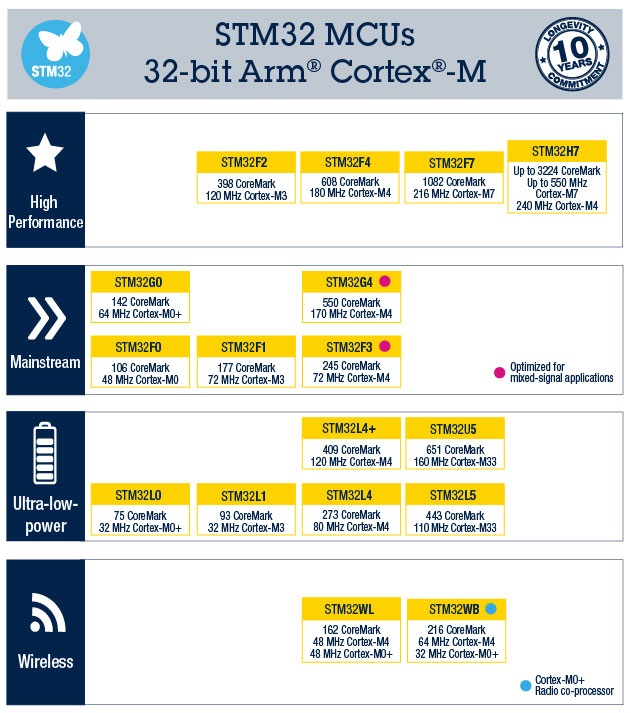
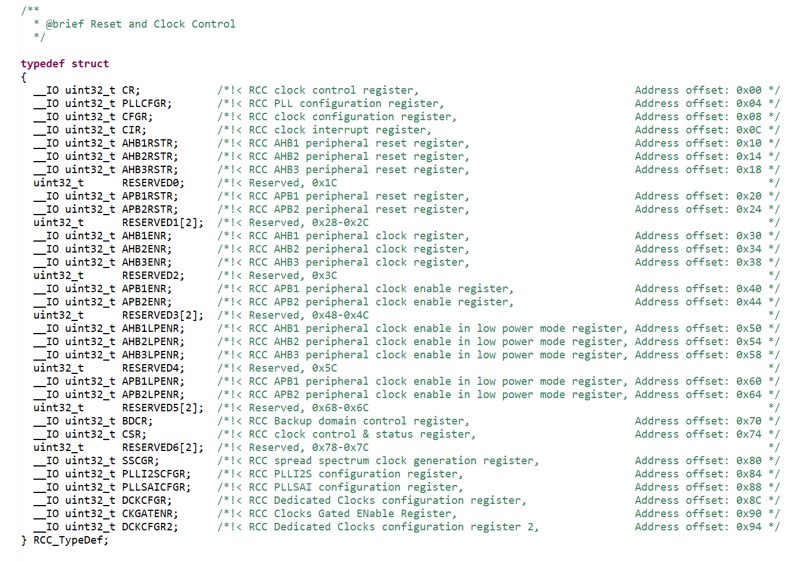
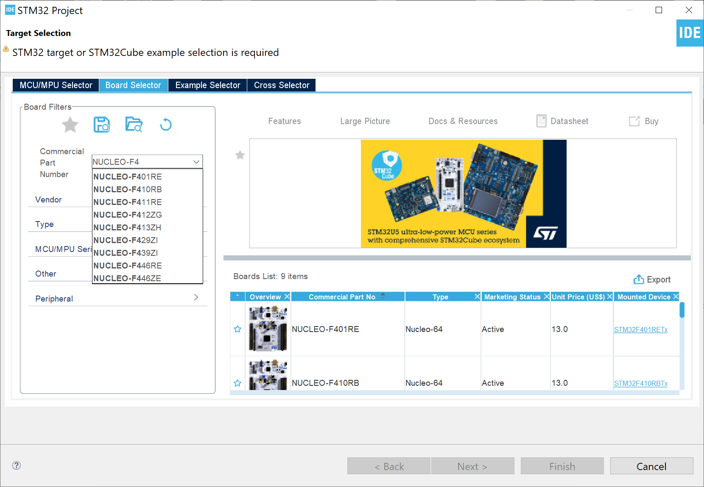

CMSIS สำหรับซีพียูตระกูล Arm Cortex#
▷ แนะนำ Arm CMSIS#
CMSIS (The Common Microcontroller Software Interface Standard) เป็นการกำหนดรูปแบบของซอฟต์แวร์สำหรับตัวประมวลผลที่มีสถาปัตยกรรมแบบ Arm Cortex-M (ใช้สำหรับชิปประเภท "ไมโครคอนโทรลเลอร์" หรือ MCU) และ Arm Cortex-A (เช่น Cortex-A5/A7/A9 สำหรับชิปประเภท "ไมโครโพรเซสเซอร์" หรือ MPU ซึ่งรองรับการใช้งานระบบปฏิบัติการ Embedded Linux ได้)
"The Common Microcontroller Software Interface Standard (CMSIS) is a vendor-independent abstraction layer for microcontrollers that are based on Arm Cortex processors. CMSIS defines generic tool interfaces and enables consistent device support. The CMSIS software interfaces simplify software reuse, reduce the learning curve for microcontroller developers, and improve time to market for new devices."
CMSIS เกิดจากความต้องการที่จะให้มีมาตรฐาน (Standardization) หรือ อินเทอร์เฟสสำหรับซอฟต์แวร์ (Software Interface) โดยบริษัท Arm Ltd. เพื่อให้ผู้ที่พัฒนาชิปหรือซอฟต์แวร์สำหรับซีพียูดังกล่าว ได้มีแนวทางเดียวกันในการพัฒนาและสามารถทำงานร่วมกันได้ ในปัจจุบันได้มีการพัฒนาหลายเวอร์ชัน จนมาถึง CMSIS 5
CMSIS เปรียบเสมือนกับการกำหนด API (Application Programming Interface) สำหรับการเขียนพัฒนาแอพพลิเคชันโดยทั่วไป และไฟล์ต่าง ๆ ที่เกี่ยวข้องกับ CMSIS ได้ถูกเปิดเผยให้เป็น Open Source (Apache 2.0 License) (CMSIS on Github) และหากเป็นโค้ดในภาษา C/C++ ก็จะอ้างอิงกับมาตรฐาน ANSI C/C99 และ C++ (ISO/IEC 14882:2003 / C++03) ตามลำดับ รวมถึงมีการตรวจสอบตามข้อกำหนดของ MISRA-C:2012 ด้วยเช่นกัน (แต่ไม่จำเป็นต้องเป็นไปตามข้อกำหนดทั้งหมด อาจมีข้อยกเว้นบ้าง)
CMSIS ทำให้มีรูปแบบที่เป็นมาตรฐานสำหรับการทำงานของซอฟต์แวร์ ซึ่งนำไปใช้งานกับฮาร์ดแวร์จากต่างผู้ผลิตกันได้ ช่วยลดต้นทุนในการพัฒนาซอฟต์แวร์ ลดระยะเวลาในการพัฒนาจนไปสู่ตลาด กำหนดรูปแบบในการเชื่อมต่อกับฮาร์ดแวร์เพื่อการดีบักการทำงานของเฟิร์มแวร์ และการแสดงสถานะการทำงานของวงจรภายในชิป
▷ องค์ประกอบทางซอฟต์แวร์ของ Arm CMSIS#
องค์ประกอบทางซอฟต์แวร์ (Software Components) ของ CMSIS (version 5) มีดังนี้
- CMSIS-Core(M) เป็น API สำหรับสถาปัตยกรรม Arm Cortex-M และวงจรรอบข้างภายในชิปเดียวกัน
- CMSIS-Core(A) เป็น API สำหรับสถาปัตยกรรม Arm Cortex-A และวงจรรอบข้างภายในชิปเดียวกัน
- CMSIS-Driver เป็น API สำหรับการใช้งานวงจรต่าง ๆ ของฮาร์ดแวร์ในระดับล่าง (เช่น USART, SPI, I2C, USB, CAN, Ethernet MAC/PHY, SDIO for SD/MMC, WiFi) และนำไปใช้ในการพัฒนาซอฟต์แวร์ในระดับที่สูงขึ้นไป เช่น Middleware เช่น การสื่อสารข้อมูลและเครือข่ายในรูปแบบต่าง ๆ การเชื่อมต่อด้วยบัส USB การจัดการข้อมูลในระบบไฟล์ เป็นต้น
- CMSIS-DSP เป็นไลบรารีสำหรับเขียนโค้ดที่เน้นการคำนวณเชิงตัวเลขและประมวลผลสัญญาณข้อมูลดิจิทัล (Digital Signal Processing) เช่น การคำนวณโดยใช้รูปแบบข้อมูลที่เรียกว่า Fixed-point numbers (fractional q7, q15, q31) และเลขทศนิยมขนาด 32 บิต ( single precision floating-point ) โดยใช้ความสามารถของซีพียูและชุดคำสั่ง เช่น SIMD ที่รองรับการทำงานโดย Arm Cortex-M4/M7/M33/M35P
- CMSIS-NN เป็นไลบรารีที่รวบรวมฟังก์ชันที่เกี่ยวข้องกับการคำนวณโครงข่ายประสาทเทียม (Neural Network Kernels) และใช้สำหรับ Arm Cortex-M และถูกออกแบบมาให้ทำงานได้อย่างมีประสิทธิภาพในแง่ของการประมวลผลระดับคำสั่งของซีพียูและการใช้หน่วยความจำ
- CMSIS-RTOS v1 เป็นการกำหนด API สำหรับ RTOS (Real-Time Operating System) เวอร์ชัน 1 สำหรับ ArmCortex-M0/M0+/M3/M4/M7 และใช้ Keil RTX เป็นตัวอย่างในการสร้างฟังก์ชันการทำงาต่าง ๆ ตามข้อกำหนดของ API
- CMSIS-RTOS v2 เป็นการขยายหรือเพิ่มฟังก์ชันการทำงานของ RTOS v2 ให้รองรับได้ทั้ง Arm Cortex-M และ Arm Cortex-A5/A7/A9 รวมถึงการทำงานแบบหลายซีพียู (Multi-Core Processor)
- CMSIS-SVD เป็นไฟล์ที่มีรายละเอียดเกี่ยวกับชิปไมโครคอนโทรลเลอร์ เช่น รายการของรีจิสเตอร์ภายใน (Memory-mapped Registers of Peripherals) และจะถูกนำไปใช้ในการสร้างไฟล์ CMSIS-Core C Header Files
- CMSIS-Pack
เป็นการกำหนดรูปแบบแพ็คเกจของซอฟต์แวร์สำหรับการติดตั้งใช้งาน (หรือที่เรียกว่า Software Packs) สำหรับผู้พัฒนา Software Tools ซึ่งประกอบด้วยหลายส่วน เช่น
- C/C++ Source Code & Header Files
- Software Libraries
- Documentation
- Example / Demo Projects
- Project Templates
- CMSIS-DAP เป็นตัวอย่างการพัฒนาเฟิร์มแวร์ เช่น CMSIS-DAP interface firmware ซึ่งเป็น Open Source สำหรับไมโครคอนโทรลเลอร์ เพื่อนำใช้ในการอัปโหลดและดีบักการทำงานของโค้ดในฮาร์ดแวร์จริง (In-Circuit Debugging) อุปกรณ์ที่ทำงานได้ในลักษณะนี้ จะเรียกว่า " CMSIS-DAP based / DAPLink Debuggers" และทางบริษัท Arm ก็ได้ออกแบบตัวอย่างฮาร์ดแวร์ (Reference Design) และ เรียกว่า "Arm Mbed HDK"
ตัวอย่างอุปกรณ์ Debug Probes ที่ทำงานเข้ากับ CMSIS-DAP ได้ เช่น
- SEGGER J-Link OB (based on Atmel SAM3U)
- STMicroelectronics ST-LINK/V2 (based on STM32F103CB)
การทำงานของซอฟต์แวร์ที่เป็นไปตามข้อกำหนดของ CMSIS นอกจากจำแนกตามองค์ประกอบแล้ว ยังจำแนกตามระดับชั้นในเชิงสถาปัตยกรรมของซอฟต์แวร์ตามรูปดังนี้
รูป: องค์ประกอบของซอฟต์แวร์สำหรับ CMSIS (Source: Arm)
รูป: ชั้นของซอฟต์แวร์ (Software Layer) ที่เชื่อมต่อกับการทำงานของชิปในระดับล่าง และการทำงานของซอฟต์แวร์หรือแอพพลิเคชันในระดับที่สูงขึ้นไป (Source: Arm)
รูป: ตัวอย่างการใช้งาน Ethernet (MAC & PHY) สำหรับการเชื่อมต่อในระบบเครือข่ายด้วย TCP/IP และการใช้ซอฟต์แวร์ที่เป็นตัวเลือกจากต่างผู้ผลิต (Source: Arm)
รูป: ตัวอย่างขั้นตอนในการสร้าง CMSIS Pack - Device Family Pack (DFP) สำหรับไมโครคอนโทรลเลอร์ (Source: Arm)
▷ ความร่วมมือจากบริษัทผู้ผลิตชิปและซอฟต์แวร์#
บริษัทผู้พัฒนาชิป (MCU Chip Vendors) เช่น STMicroelectronics, NXP/FreeScale, Texas Instruments, Microchip/Atmel เป็นต้น รวมถึงผู้พัฒนาซอฟต์แวร์ (Development Software Vendors) เช่น ซอฟต์แวร์ Arm Development Studio, Arm-Keil MDK, SEGGER Embedded Studio for Arm , IAR Embedded Workbench for Arm เป็นต้น ก็ได้ทำตามข้อกำหนดของ CMSIS
หากพิจารณาซอฟต์แวร์ Arm -Keil MDK และ Arm Development Studio จะพบว่า มีการใช้งาน CMSIS Components
รูป: องค์ประกอบของซอฟต์แวร์ Arm Development Studio (Source: Arm)
รูป: องค์ประกอบของซอฟต์แวร์ Arm-Keil MDK (Source: Arm)
ข้อกำหนดของ CMSIS จะช่วยในการจัดการซอฟต์แวร์ที่เกี่ยวข้องกับการใช้งานชิปไมโครคอนโทรลเลอร์ตระกูล Arm Cortex ในระดับต่าง ๆ ดังนี้
- Device Support: เป็นระดับล่างสุดเกี่ยวข้องกับตัวชิป เมื่อต้องการใช้ชิปรุ่นใดหรือตระกูลใด
จะต้องมีการติดตั้งแพ็คเกจที่เรียกว่า "Device Family Pack (DFP)" ภายในประกอบด้วยไฟล์ต่าง ๆ เช่น
- CMSIS-compliant Startup Files / Device Files / System Files
- CMSIS Drivers
- Board Support: เป็นการรองรับการใช้งานบอร์ดของผู้ผลิต เช่น บอร์ด STM32 Nucleo หรือ Discovery ของบริษัท STMicroelectronics หรือ Development Kits ของบริษัทอื่น ดังนั้นหากจะเลือกใช้บอร์ดใด ก็จะมีแพ็จเกจที่เรียกว่า Board Support Pack (BSP) ให้เลือกใช้งานได้
รูป: ตัวอย่างการเลือก DFP & BSP เพื่อนำมาติดตั้งใช้งานสำหรับ Atmel SAMD21 ใน Arm-Keil MDK Pack Installer (ดูรายการตัวเลือกได้จาก MDK5 Software Packs)
รูป: ตัวอย่างการเลือก DFP & BSP เพื่อนำมาติดตั้งใช้งานสำหรับ STM32F4xx ใน Arm-Keil MDK Pack Installer
▷ ซอฟต์แวร์ STM32Cube สำหรับ STM32 MCUs#
ถัดไปลองมาดูตัวอย่างซอฟต์แวร์ของบริษัท STMicroelectronics (STM) ที่จะแสดงให้เห็นความเกี่ยวข้องกับ CMSIS
บริษัท STM พัฒนาและผลิตชิปสองประเภทคือ ไมโครคอนโทรลเลอร์ MCU (32-bit Arm Cortex-M) และ ไมโครโพรเซสเซอร์ MPU (32-bit Arm Cortex-A plus Cortex-M) หรือแบบผสมในชิปเดียวกัน (Hybrid - Heterogeneous Multi-Core Architecture)

รูป: STM32 32-bit Arm Cortex-M MCUs (Source: STM)
รูป: STM32 32-bit Arm Cortex-M MPUs (Source: STM)
STM32Cube เป็นซอฟต์แวร์ประเภท Open Source สำหรับการพัฒนาเฟิร์มแวร์ เพื่อนำไปใช้กับไมโครคอนโทรลเลอร์ของบริษัท STM แบ่งออกเป็นกลุ่มจำแนกตามตระกูล เช่น
- STM32CubeF0 (STM32F0xx: Arm Cortex-M0, ARMv6-M instruction set)
- STM32CubeF1 (STM32F1xx: Arm Cortex-M3, ARMv7 instruction set)
- STM32CubeF3 (STM32F3xx: Arm Cortex-M4, ARMv7-M instruction set)
- STM32CubeF4 (STM32F4xx: Arm Cortex-M4, ARMv7-M instruction set)
- STM32CubeF7 (STM32F4xx: Arm Cortex-M7, ARMv7-M instruction set)
- STM32CubeL0 (STM32L0xx: Arm Cortex-M0+, ARMv6-M instruction set)
- STM32CubeL4 (STM32L4xx: Arm Cortex-M4, ARMv7-M instruction set)
STM32CubeMX เป็นซอฟต์แวร์ที่ทำหน้าที่ช่วยในการสร้างโค้ดเริ่มต้นในโปรเจกต์ ตามที่ผู้ใช้ได้ตั้งค่าตัวเลือกสำหรับวงจรภายในของชิปเป้าหมาย (Peripheral Configuration & Initial Code Generation) ดังนั้นจึงช่วยลดภาระสำหรับผู้ใช้ ในการสร้างไฟล์ต่าง ๆ และมีการใส่โครงสร้างโค้ดเป็นตัวอย่าง (Code Template) หรือหากมีการแก้ไขไฟล์สำหรับการตั้งค่าใช้งาน (.ioc) โดยผู้ใช้ ซอฟต์แวร์นี้ก็สามารถสร้างโค้ดในไฟล์ต่าง ๆ ที่เกี่ยวข้องได้โดยอัตโนมัติ
STM32CubeIDE เป็นซอฟต์แวร์ฟรีของบริษัท STM ทำหน้าที่เป็น IDE หรือ C/C++ Development Platform สำหรับไมโครคอนโทรลเลอร์ STM32 หากย้อนกลับไปในช่วงปลายปีค.ศ. 2017 บริษัท STM ได้เข้าซื้อบริษัท Atollic และซอฟต์แวร์ที่มีชื่อว่า Atollic TrueSTUDIO แล้วก็เปิดให้ใช้ได้ฟรี แต่ใช้ได้สำหรับไมโครคอนโทรลเลอร์ของ STM เท่านั้น ต่อมาจึงได้มีการพัฒนาต่อแล้วเปลี่ยนชื่อใหม่เป็น STM32CubeIDE
ซอฟต์แวร์ตัวนี้ใช้ Eclipse/CDT framework เป็นพื้นฐานในการทำงานสำหรับ IDE ใช้ GCC toolchain สำหรับการคอมไพล์โค้ดภาษา C/C++ และ GDB สำหรับการดีบักโค้ดและทดสอบการทำงานในฮาร์ดแวร์จริงได้ (In-Circuit Debugging) นอกจากนั้นได้รวม STM32CubeMX มาให้แล้ว (ไม่จำเป็นต้องติดตั้งแยกกัน)

รูป: STM32CubeMX (Source: ST)
ตัวอย่างขององค์ประกอบภายใน STM32CubeF4 Package มีดังนี้
- CMSIS Software Components
จำแนกออกเป็นกลุ่มดังนี้
- CMSIS Core
- CMSIS Device
- CMSIS RTOS2
- CMSIS DSP
- CMSIS NN
- STM32 Drivers (
STM32F4xx_HAL_Driver) เป็น API และไลบรารีของบริษัท STM สำหรับการเขียนโค้ดเพื่อใช้งานวงจรรอบข้างที่มีอยู่ในชิปไมโครคอนโทรลเลอร์ STM32F4 แบ่งเป็นสองระดับคือ- STM32 HAL (Hardware Abstraction Layer): มีการตั้งชื่อไฟล์เป็น
stm32f4xx_hal_<xxx>.hและstm32f4xx_hal_<xxx>.cและฟังก์ชันมักจะขึ้นต้นด้วยHAL_เช่นHAL_Init(),HAL_Delay(),HAL_GPIO_WritePin()เป็นต้น - STM32 LL (Low-Level): มีการตั้งชื่อไฟล์เป็น
stm32f4xx_ll_<xxx>.hและstm32f4xx_ll_<xxx>.cโดยที่<xxx>ใช้แทนชื่อของวงจรต่าง ๆ ภายในชิป
- STM32 HAL (Hardware Abstraction Layer): มีการตั้งชื่อไฟล์เป็น
- STM32 BSP Drivers สำหรับบอร์ดของบริษัท เช่น Nucleo Boards และ Discovery Kits เป็นต้น
-
STM32 Middlewares เป็นไลบรารีของ STM หรือของบริษัทอื่น (3rd Party) สำหรับการใช้งานในระดับสูงขึ้นไป โดยมีการใช้งาน STM32 HAL เป็นพื้นฐาน เช่น
- RTOS / FreeRTOS
- USB
- Graphics / TouchGFX
- LwIP (light-weight TCP/IP Stack)
- mbedTLS
- FatFS (FAT-based File System) เป็นต้น
-
Software Projects เป็นโปรเจกต์ที่สาธิตการทำงานของฮาร์ดแวร์หรือบอร์ดตัวอย่าง และการเขียนโค้ด (Examples / Project Templates / Demo Applications) โดยจำแนกตามบอร์ดตัวอย่างของ STM ซอฟต์แวร์ประเภท IDE และคอมไพล์เลอร์ที่เลือกใช้ได้ เป็นต้น
- Documentation เช่น เอกสารเป็นไฟล์ .pdf แนะนำการใช้งาน เป็นต้น
ตาราง: ตัวอย่างไฟล์ที่เกี่ยวข้องกับ CMSIS Core (จำแนกตามสถาปัตยกรรมของซีพียู และคอมไพล์เลอร์ที่เลือกใช้งานได้)
| Files | Description |
|---|---|
| core_cm0.h | CMSIS Cortex-M0 Core Peripheral Access Layer Header File |
| core_cm0plus.h | CMSIS Cortex-M0+ Core Peripheral Access Layer Header File |
| core_cm3.h | CMSIS Cortex-M3 Core Peripheral Access Layer Header File |
| core_cm4.h | CMSIS Cortex-M4 Core Peripheral Access Layer Header File |
| core_cm7.h | CMSIS Cortex-M7 Core Peripheral Access Layer Header File |
| core_cm23.h | CMSIS Cortex-M23 Core Peripheral Access Layer Header File |
| core_cm33.h | CMSIS Cortex-M33 Core Peripheral Access Layer Header File |
| cmsis_compiler.h | CMSIS compiler generic header file |
| cmsis_gcc.h | CMSIS compiler GCC header file |
| cmsis_armcc.h | CMSIS compiler ARMCC (Arm Compiler 5) header file |
| cmsis_armclang.h | CMSIS compiler armclang (Arm Compiler 6) header file |
| cmsis_iccarm.h | CMSIS compiler ICCARM (IAR Compiler for Arm) header file |
ตาราง: ตัวอย่างไฟล์ของ STM ที่เกี่ยวข้องกับ CMSIS Device & System (สำหรับ STM32F4 Device Family → STM32F446xx MCU Device เป็นตัวอย่างของชิปที่ได้เลือกใช้งาน)
| Files | Description |
|---|---|
| system_stm32f4xx.h | CMSIS Cortex-M4 Device System Source File for STM32F4xx devices |
| system_stm32f4xx.c | CMSIS Cortex-M4 Device Peripheral Access Layer System Source File |
| stm32f4xx.h | CMSIS STM32F4xx Device Peripheral Access Layer Header File |
| stm32f446xx.h | CMSIS STM32F446xx Device Peripheral Access Layer Header File |
| startup_stm32f446xx.s | STM32F446xx Device Startup File + Vector Table for specific toolchains (GCC, ARM, IAR) |
ไฟล์ stm32f446xx.h เป็น C Header File ที่ประกาศค่าคงที่หรือสัญลักษณ์ต่าง ๆ และชนิดข้อมูลที่เป็นโครงสร้างแบบ struct เพื่อความสะดวกในการเข้าถึงรีจิสเตอร์ของวงจรต่าง ๆ ภายในชิป (Memory-mapped Peripherals Registers) และมีตัวอย่างที่ได้ตัดมาแสดงบางส่วนดังนี้
รูป: การประกาศชนิดข้อมูลสำหรับโครงสร้างแบบ struct สำหรับวงจร GPIO และ
USART ตามลำดับ ซึ่งภายในโครงสร้างข้อมูล จะมีชื่อสำหรับอ้างอิงรีจิสเตอร์ที่เกี่ยวข้องกับวงจรดังกล่าว

รูป: การกำหนดชนิดข้อมูลสำหรับวงจร RCC (Reset and Clock Controller) ของ STM32F446RE
รูป: (ขวามือ) การกำหนดสัญลักษณ์สำหรับแอดเดรสเริ่มต้น (Base Addresses) โดยแบ่งตามประเภทของวงจรต่าง ๆ
ที่เชื่อมต่อกับระบบบัส APB1 และ APB2 ภายในชิป STM32F446RE
(ซ้ายมือ) สัญลักษณ์หรือชื่อที่สามารถนำไปใช้งานในรูปแบบของพอยน์เตอร์ (Pointers) เช่น GPIOA->MODER และ GPIOA->PUPDR สำหรับเข้าถึงรีจิสเตอร์ MODER และ PUPDR ของ GPIO Port A เป็นต้น
การทำงานของซอฟต์แวร์ STM32CubeMX จะสร้างไฟล์สำหรับโปรเจกต์ได้โดยอัตโนมัติ หลังจากที่ผู้ใช้ได้กำหนดตัวเลือกต่าง ๆ สำหรับวงจรภายใน ซึ่งมีการจำแนกตามส่วนต่าง ๆ ของชิป เช่น การกำหนดตัวเลือกสำหรับวงจรสร้างความถี่ การเปิดใช้งานขา GPIO การเปิดใช้งานวงจร USART สำหรับรับส่งข้อมูลแบบ Serial รวมถึงการเปิดใช้งานอินเทอร์รัพท์ที่เกี่ยวข้องกับวงจรเหล่านั้น เป็นต้น ตัวอย่างของไฟล์ที่เกี่ยวข้องมีดังนี้
| Files | Description |
|---|---|
| main.c | Main Source Code |
| main.h | Main Header File |
| system_stm32f4xx.c | CMSIS-compliant STM32F4xx System Source File |
| stm32f4xx_hal_conf.h | STM32F4xx HAL Configuration File |
| stm32f4xx_hal_msp.c | STM32F4xx HAL MSP (MCU Support Package) File |
| stm32f4xx_it.h | STM32F4xx Header File for Interrupt Handlers |
| stm32f4xx_it.c | STM32F4xx Source File for ISRs |
ไฟล์ stm32f4xx_hal_conf.h เกี่ยวข้องกับการใช้เลือกใช้งานวงจรรอบข้าง (On-chip Peripherals) และการทำงานของ STM32 HAL Drivers การกำหนดค่าความถี่ของวงจรจากภายนอกหรือภายใน
(เช่น ค่าความถี่สำหรับ HSE_VALUE และ HSI_VALUE ของชิปไมโครคอนโทรลเลอร์ที่ใช้งานจริง) ตัวอย่างการกำหนดค่า (โดยใช้คำสั่ง #define) เพื่อเลือกใช้งานวงจรภายในที่พบได้บ่อยสำหรับ STM32F4 เช่น
HAL_MODULE_ENABLEDHAL_CORTEX_MODULE_ENABLEDHAL_PWR_MODULE_ENABLEDHAL_RCC_MODULE_ENABLEDHAL_FLASH_MODULE_ENABLEDHAL_DMA_MODULE_ENABLEDHAL_GPIO_MODULE_ENABLEDHAL_EXTI_MODULE_ENABLEDHAL_UART_MODULE_ENABLEDHAL_ADC_MODULE_ENABLEDHAL_I2C_MODULE_ENABLEDHAL_RTC_MODULE_ENABLEDHAL_SPI_MODULE_ENABLEDHAL_TIM_MODULE_ENABLED- ...
ไฟล์ system_stm32f4xx.h และ system_stm32f4xx.c มีสองฟังก์ชันและหนึ่งตัวแปรภายนอก
SystemInit()เป็นฟังก์ชันนี้จะถูกเรียกให้ทำงานเมื่อไมโครคอนโทรลเลอร์เริ่มทำงานหลังจากการรีเซต และรับช่วงต่อจากการทำงานของ Startup Code (เช่น ไฟล์startup_stm32f4xx.s)SystemCoreClockUpdate()เป็นฟังก์ชันสำหรับการอัปเดทค่าของตัวแปรSystemCoreClockให้ถูกต้อง หากมีการตั้งค่าใหม่ในรีจิสเตอร์ RCC ที่ทำให้เปลี่ยนความถี่ของ Core ClockSystemCoreClockเป็นตัวแปรภายนอก (Global Variable) สำหรับระบุค่าความถี่ของซีพียู (Core Clock Frequency) มีหน่วยเป็น Hz
ไฟล์ stm32fxx_hal_msp.c มีฟังก์ชันต่าง ๆ ที่เกี่ยวข้องกับการตั้งค่าเริ่มต้นใช้งาน (Initialization Functions) เพื่อเปิด (หรือปิด) การใช้งานวงจรรอบข้าง ตามที่ผู้ใช้ได้เลือกเอาไว้ใน STM32CubeMX ตัวอย่างชื่อของฟังก์ชันสำหรับวงจร GPIO, UART, I2C และ SPI (หากมีการเลือกใช้งาน) ได้แก่
void HAL_MspInit( void )void HAL_UART_MspInit( UART_HandleTypeDef *huart )void HAL_I2C_MspInit( I2C_HandleTypeDef *hi2c )void HAL_SPI_MspInit( SPI_HandleTypeDef *hspi )
ไฟล์ stm32f4xx_it.c เป็นไฟล์ที่ฟังก์ชันที่เกี่ยวข้องกับอินเทอร์รัพท์ในระบบ
(ในส่วนที่เกี่ยวข้องกับการทำงานของซีพียูและวงจรรอบข้าง) ตัวอย่างฟังก์ชันที่เกี่ยวข้อง เช่น
-
CPU Exception Handlers
void NMI_Handler( void )void HardFault_Handler( void )void MemManage_Handler( void )void UsageFault_Handler( void )void SVC_Handler( void )void PendSV_Handler( void )void DebugMon_Handler( void )void SysTick_Handler( void )
-
STM32 Peripheral Interrupt Handlers
void HAL_GPIO_EXTI_IRQHandler( uint16_t GPIO_Pin )void HAL_UART_IRQHandler( UART_HandleTypeDef *huart )void HAL_SPI_IRQHandler( SPI_HandleTypeDef *hspi )void HAL_I2C_EV_IRQHandler( I2C_HandleTypeDef *hi2c )void HAL_I2C_ER_IRQHandler( I2C_HandleTypeDef *hi2c )- ...

รูป: การสร้างโปรเจกต์ใหม่ใน STM32CubeIDE โดยเลือกบอร์ด NUCLEO STM32F446RE (STM32F446RET6 MCU) เป็นตัวอย่างในการใช้งาน
รูป: เริ่มต้นสร้างโปรเจกต์ใหม่ใน STM32CubeIDE โดยเลือกบอร์ด NUCLEO STM32F446RE
ลองสังเกตดูรายชื่อไฟล์ต่าง ๆ ต่อไปนี้ ที่มีอยู่ในโปรเจกต์ ถูกสร้างและเปิดใช้งานโดย STM32CubeIDE เป็นตัวอย่าง
รูป: ซอฟต์แวร์ STM32CubeIDE และการเปิดไฟล์ STM32CubeMX Configuration File (.ioc) สำหรับบอร์ด NUCLEO STM32F446RE ที่ถูกสร้างมาเป็นตัวอย่าง (Peripheral Initialization in Default Mode)
รูป: มุมมอง Pinout View แสดงตัวอย่างการเลือกใช้งานขา GPIO ใน STM32CubeMX ซึ่งจะเห็นได้ว่า มีการใช้ขา TX=PA2, RX=PA3 สำหรับ UART2 และ GPIO สำหรับ Push Button ที่ขา PC13 และ Onboard LED / User LED) ที่ขา PA5 ตามลำดับ
รูป: ตัวอย่างโค้ดในฟังก์ชัน MX_GPIO_Init() และ MX_USART2_UART_Init()
สำหรับการกำหนดรูปแบบหรือฟังก์ชันการทำงานของขา GPIO
(ในกรณีนี้คือ ขาสำหรับ LED และ User Button บนบอร์ด NUCLEO) และวงจร USART2 ตามลำดับ
ฟังก์ชั้นเหล่านี้เป็นตัวอย่างของฟังก์ชันที่ได้ถูกสร้างโดย STM32CubeMX แล้วนำมาใส่ลงในไฟล์ main.c โดยอัตโนมัติ
ในฟังก์ชัน main() จะต้องมีการเรียกใช้ฟังก์ชันเหล่านี้ก่อนเริ่มต้นใช้งานวงจรที่เกี่ยวข้อง
รูป: ขั้นตอนการคอมไพล์โค้ดในโปรเจกต์ (Build Project) ซึ่งมีโค้ดตัวอย่างที่ทำให้ LED บนบอร์ดกระพริบได้ และส่งข้อความออกทาง UART2
เมื่อทำขั้นตอนเพื่อคอมไพล์โค้ด เพื่อให้ได้ไฟล์เอาต์พุตที่เป็น .elf และ .bin หรือ .hex ได้แล้ว ก็สามารถนำไปอัปโหลดไปยังบอร์ด NUCLEO STM32F446RE เพื่อทดสอบดูการทำงานของโค้ดในเบื้องต้น นอกจากนั้นแล้วยังสามารถดีบักการทำงานของโค้ดที่เขียน โดยใช้บอร์ดดังกล่าวได้ เนื่องจากบอร์ดดังกล่าวมีวงจร ST-Link/V2 และทำงานได้ตามข้อกำหนดของ Arm CMSIS-DAP
รูป: การตั้งค่าเพื่อดีบักการทำงานของโค้ดโดยใช้บอร์ด NUCLEO STM32F446RE และซอฟต์แวร์ ST-Link GDB Server ผ่านทางอุปกรณ์ ST-Link/v2 (STM32F103CB-based) ที่มีอยู่บนบอร์ด
รูป: ตัวอย่างการดีบักและตั้งค่า Breakpoint ในโค้ด เช่น ตำแหน่งที่มีคำสั่ง
HAL_GPIO_WritePin(...)
▷ Arm Mbed OS และความเกี่ยวข้องกับ CMSIS#
Mbed OS เป็นซอฟต์แวร์ประเภท RTOS ของบริษัท Arm Ltd. และเป็น Open Source และใช้สำหรับไมโครคอนโทรลเลอร์ที่มีตัวประมวลผล Arm Cortex-M ซึ่งมีให้เลือกใช้งานจากหลายบริษัท เช่น STM, NXP / Freescale, Nordic Semiconductor, Silicon Labs เป็นต้น (ดูรายการชิปไมโครคอนโทรลเลอร์ที่ใช้ได้กับ Mbed OS)
TARGET_Ambiq_Micro/*TARGET_Analog_Devices/*TARGET_Cypress/*TARGET_Freescale/*TARGET_GigaDevice/*TARGET_Maxim/*TARGET_NORDIC/*TARGET_NUVOTON/*TARGET_NXP/*TARGET_RENESAS/*TARGET_STM/*TARGET_Samsung/*TARGET_Silicon_Labs/*TARGET_TOSHIBA/*
หากดูในไดเรกทอรี TARGET_STM/TARGET_STM32F4/ จะเห็นว่า มีรายการของไมโครคอนโทรลเลอร์ที่ใช้งานได้
ในตระกูล STM32F4 และมีไดเรกทอรี STM32Cube_FW ซึ่งภายในประกอบด้วย
CMSIS/*STM32F4xx_HAL_Driver/*stm32f4xx_hal_conf.hsystem_stm32f4xx.cCMakeLists.txt
ดังนั้นก็สามารถสรุปได้ว่า Mbed OS สำหรับ STM32 นั้นใช้ CMSIS-compatible STM32Cube Firmware เป็นพื้นฐานในการทำงาน
▷ STM32duino และความเกี่ยวข้องกับ CMSIS#
STM32duino เป็นซอฟต์แวร์ในประเภทที่เรียกว่า Arduino Core สำหรับไมโครคอนโทรลเลอร์ STM32 สามารถนำมาติดตั้งและใช้งานร่วมกับซอฟต์แวร์อย่างเช่น Arduino IDE และ VS Code IDE + PlatformIO ทำให้ผู้ใช้สามารถเขียนโค้ดด้วย Arduino API สำหรับบอร์ดไมโครคอนโทรลเลอร์ STM32 ได้ง่ายขึ้น แทนการเขียนโค้ดโดยใช้คำสั่งของ STM32Cube HAL หากใช้ซอฟต์แวร์ เช่น STM32CudeIDE ของบริษัท STM
หากลองดูในไดเรกทอรี libraries/SrcWrapper/src/stm32 จะพบว่า มีไฟล์ Source Code (.c) ที่เป็นพื้นฐานในการสร้างฟังก์ชันต่าง ๆ สำหรับ Arduino API โดยใช้คำสั่งของ STM32 HAL Drivers เช่น ดูได้จากไดเรกทอรี system/Drivers/
เช่น STM32F4xx_HAL_Driver สำหรับ STM32F4 Series
▷ MicroPython และความเกี่ยวข้องกับ CMSIS#
MicroPython เป็นเฟิร์มแวร์สำหรับรองรับการเขียนโค้ดภาษา Python 3 สำหรับไมโครคอนโทรลเลอร์ เช่น MicroPython Port for STM32
ไฟล์ต่าง ๆ ในไดเรกทอรี ports/stm32 แสดงให้เห็นว่า
มีการใช้คำสั่งของ STM32 HAL Drivers เพื่อสร้างฟังก์ชันสำหรับการทำงานของวงจรภายในไมโครคอนโทรลเลอร์ STM32
ตาราง: ตัวอย่างไฟล์ Source Code (.c) ของ MicroPython port for STM32 ที่มีการใช้คำสั่งของ STM32 HAL Drivers
| Files | STM32 On-chip Peripheral Modules |
|---|---|
uart.c |
USART/UART |
timer.c |
Timer (TIM) |
spi.c |
SPI |
i2c.c |
I2C |
usb.c |
USB |
wdt.c |
WDT (Watchdog Timer) |
rtc.c |
RTC (Real-Time Clock) |
rng.c |
RNG (True-Random Number Generator) |
ดังนั้นจึงสรุปได้ว่า STM32 HAL Drivers จึงถูกนำมาใช้เป็นพื้นฐานในการทำงานของเฟิร์มแวร์ MicroPython ในกรณีที่ใช้ชิป STM32
▷ กล่าวสรุป#
บทความนี้ได้นำเสนอเกี่ยวกับ Arm CMSIS ซึ่งเป็นการกำหนดมาตรฐานในการพัฒนาซอฟต์แวร์ และเกี่ยวข้องกับการใช้งานไมโครคอนโทรลเลอร์ที่มีตัวประมวลผลตระกูล Arm Cortex นอกจากนั้นแล้วยังแสดงให้เห็นความเชื่อมโยงระหว่าง Arm CMSIS Core / Device กับซอฟต์แวร์ เช่น STM32CubeMX / STM32CubeIDE ของบริษัท STMicroelectronics ซึ่งเป็นผู้ผลิตชิป STM32 ที่มีตัวประมวผล Arm Cortex-M อยู่ภายใน รวมถึงซอฟต์แวร์อื่น อย่างเช่น Arduino Core for STM32, MicroPython port for STM32 และ Mbed OS เป็นต้น
This work is licensed under a Creative Commons Attribution-ShareAlike 4.0 International License.
Created: 2022-03-04 | Last Updated: 2022-03-06